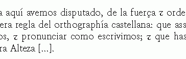

Sobre TeX
TEX es un sistema de composición tipográfica desarrollado por D. K. Knuth, que lo ha puesto a la libre disposición de todo aquel de desee usarlo. TEX es completamente programable, pero a diferencia de otras utilidades que se pueden programar con AppleScript, Visual Basic u otros lenguajes, los programas de TEX no actúan sobre el documento, sino que lo crean directamente. Como consecuencia, y siempre que no se requieran ciertas utilidades de PostScript como las figuras a la románica (con texto contorneado), TEX permite automatizar casi cualquier cosa por complicada que parezca.
Un buen ejemplo es el paquete titlesec, para
crear diferentes formatos en todo lo relacionado con títulos (los
títulos en sí, folios e índices). Pueden verse
ejemplos (PDF, 17k) en formato PDF extraídos
del manual. Otro ejemplo es el nuevo paquete spanish que permite que
el signo et usado antiguamente se genere automáticamante sin más que
escribir "y:

En realidad, la capacidad de TEX para manipular y reubicar caracteres de esta forma lo convierten en ideal para transcripciones paleográficas.
Pero sin duda, donde TEX no tiene rival es en la calidad de sus fórmulas matemáticas, que lo han convertido en el estándar de hecho para el intercambio de información técnica y científica a nivel mundial. Eso, unido a la capacidad de automatizar tareas por medio de paquetes, permite usar fácilmente notaciones muy complejas sin necesidad de crearlas cada vez que aparecen, o sin tener que copiar, pegar y corregir. Por ejemplo, el paquete tensind automatiza los índices tensoriales tan frecuentes en la relatividad general. Por tanto, no es de extrañar que entre los objetivos prioritario de MathML, el futuro estándar para matemáticas en Internet, y Unicode, en sus páginas de símbolos, esté el de ser de ser compatible con TEX.
Para más información pueden consultarse las páginas del grupo de usuarios hispanohablantes CervanTeX.
Y más
- Errores frecuentes en LaTEX describe algunos errores que se cometen con frecuencia al escribir los archivos fuente de LaTeX.
- Tipos.pdf (PDF, 44k) explica los diferentes formatos de archivos de tipos y su uso básico en LaTEX. (Anticuado.)